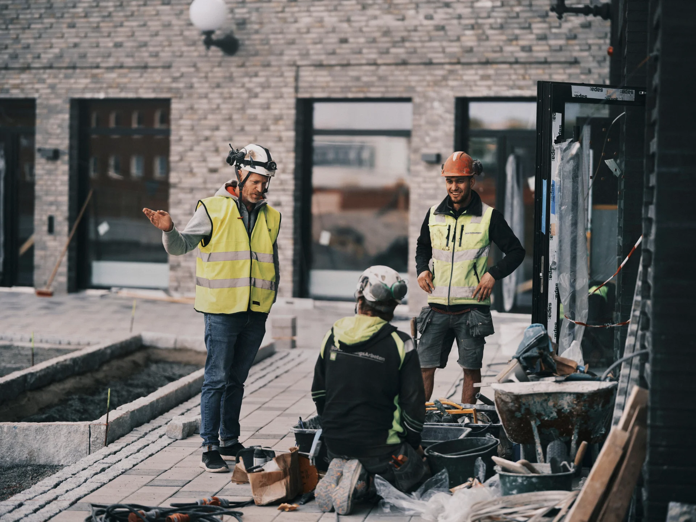

Totalentreprenad
Stora bostadsprojekt, påbyggnader och verksamhetsbyggnader. Vi samordnar uppdragets delar och arbetar nära beställaren för att hitta lösningar som fungerar i produktionen.
Se våra totalentreprenader
Vi får stora projekt att fungera genom nära samarbete, lång erfarenhet av prefab och en tydlig organisation.
Stora bostadsprojekt, påbyggnader och verksamhetsbyggnader. Vi samordnar uppdragets delar och arbetar nära beställaren för att hitta lösningar som fungerar i produktionen.
Se våra totalentreprenader
Färdiga byggdelar behöver möta en genomtänkt produktion. Vår erfarenhet av stora prefabricerade flerbostadshus är en viktig grund för hur vi planerar och driver projekt.
Mer om prefab
Vi arbetar gärna i partneringprojekt. Beställare och entreprenör samlar sin kunskap i en gemensam organisation, med tydliga mål och en öppen dialog.
Så arbetar vi i partnering
En idé, en fastighet eller ett konkret projekt?
Låt oss prata om vad vi kan åstadkomma tillsammans.